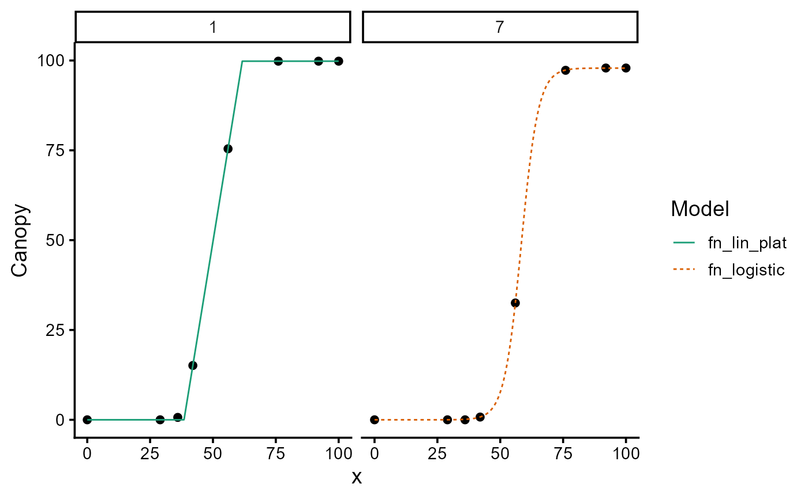

Compares several fitted modeler objects group by group (uid)
and returns a single modeler object holding, for every group, the fit
of whichever candidate model scored best.
Metrics are not comparable across groups, so they are min-max rescaled to
(0.1, 1) within each group, flipped where lower is better, and then
averaged over the requested metrics. The model with the highest mean score
wins the group.
Arguments
- ...
Two or more model objects (only of class
modeler), fitted on the same groups.- metrics
Can be "all" or a character vector of metrics used to rank the models (one or more of "logLik", "AIC", "AICc", "BIC", "Sigma", "SSE", "MAE", "MSE", "RMSE", "R2"). "AICc" by default.
Note that these metrics are not independent: "logLik", "AIC", "AICc" and "BIC" all rank models by penalised likelihood, while "SSE", "MSE", "RMSE" and "R2" are monotone transformations of one another within a group.
metrics = "all"therefore gives roughly 0.4 of the weight to the likelihood family and 0.4 to the residual-sum-of-squares family, rather than weighting ten independent criteria. Pass an explicit subset when a specific trade-off is wanted.- return_table
Logical. If
TRUE, the selection table is returned instead of the combinedmodelerobject.FALSEby default.
Value
A modeler object holding the winning fit for each group. Two
attributes are attached: "selection" (the winner, its score and the
number of metrics used, per group) and "performance" (the full
comparison table, of class performance, ready for
plot()).
Details
Groups are compared only where every candidate model produced a fit; groups
missing from any model are dropped with a warning. Within a group, a metric is
used only if every model produced a finite value for it, so the mean score is
always taken over the same set of metrics. If all models tie on a metric it
carries no information and every model receives the same score for it. Ties on
the final score are broken in favour of the model passed first in ....
Examples
library(flexFitR)
data(dt_potato)
mod_1 <- dt_potato |>
modeler(
x = DAP,
y = Canopy,
grp = Plot,
fn = "fn_lin_plat",
parameters = c(t1 = 45, t2 = 80, k = 90),
subset = c(1, 7)
)
mod_2 <- dt_potato |>
modeler(
x = DAP,
y = Canopy,
grp = Plot,
fn = "fn_logistic",
parameters = c(a = 0.199, t0 = 47.7, k = 100),
subset = c(1, 7)
)
best <- model_selection(mod_1, mod_2, metrics = "AIC")
print(best)
#>
#> Call:
#> Canopy ~ fn_lin_plat(DAP, t1, t2, k) | uid (1)
#> Canopy ~ fn_logistic(DAP, a, t0, k) | uid (1)
#>
#> Residuals (`Standardized`):
#> Min. 1st Qu. Median Mean 3rd Qu. Max.
#> -1.92280 -0.06156 0.00000 -0.01653 0.01173 2.23607
#>
#> Optimization Results `head()`:
#> uid coefficient solution std.error t value Pr(>|t|)
#> 1 t1 38.492 0.08871 433.9 1.23e-12
#> 1 t2 61.661 0.10929 564.2 3.32e-13
#> 1 k 99.811 0.17299 577.0 2.97e-13
#> 7 a 0.294 0.00495 59.4 2.57e-08
#>
#> Metrics:
#> Groups Timing Convergence Iterations
#> 2 0.7778 100% 575.5 (id)
#>
attr(best, "selection")
#> # A tibble: 2 × 6
#> uid fn_name score n_metrics model order
#> <dbl> <chr> <dbl> <int> <chr> <int>
#> 1 1 fn_lin_plat_1 1 1 fn_lin_plat 1
#> 2 7 fn_logistic_2 1 1 fn_logistic 2
plot(best, id = c(1, 7))
